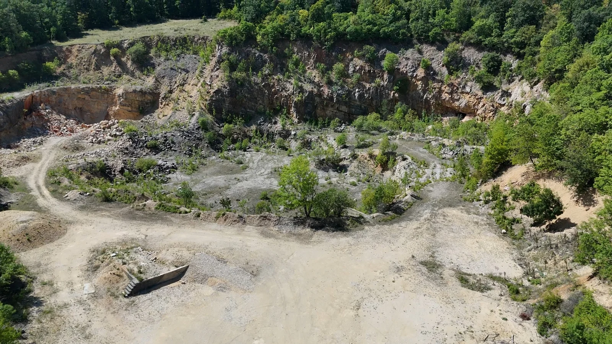
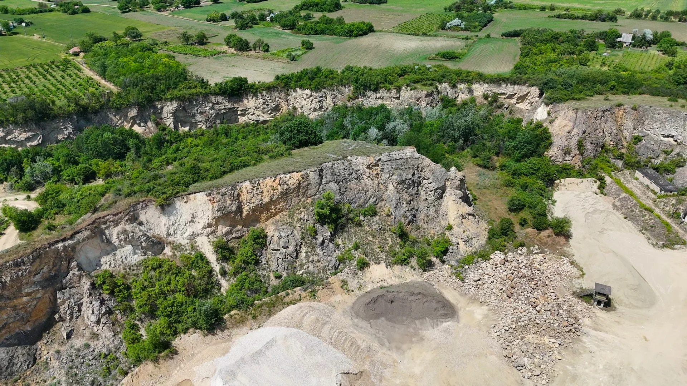
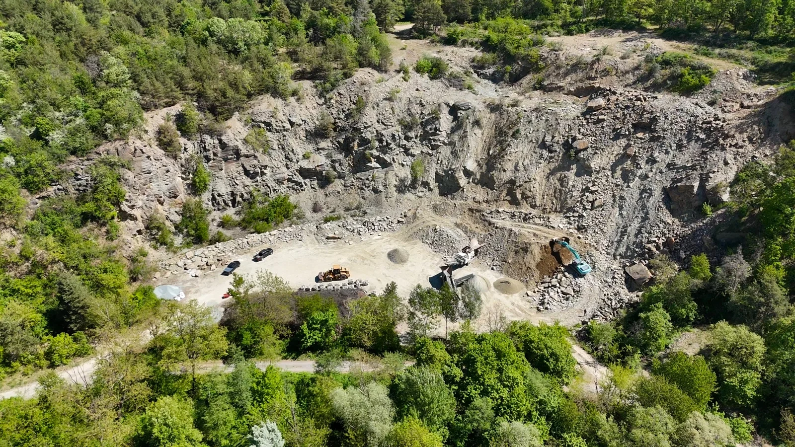
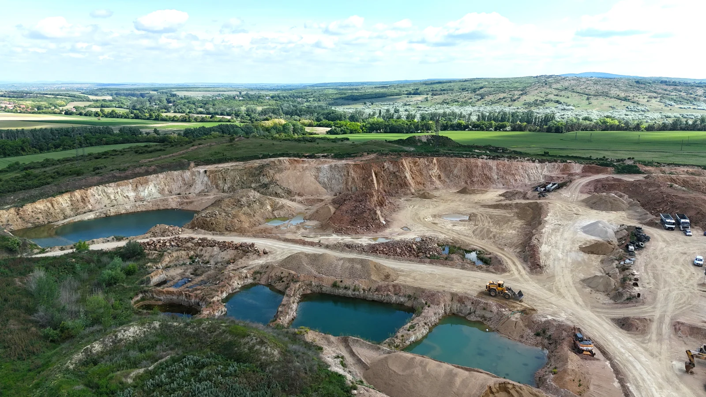
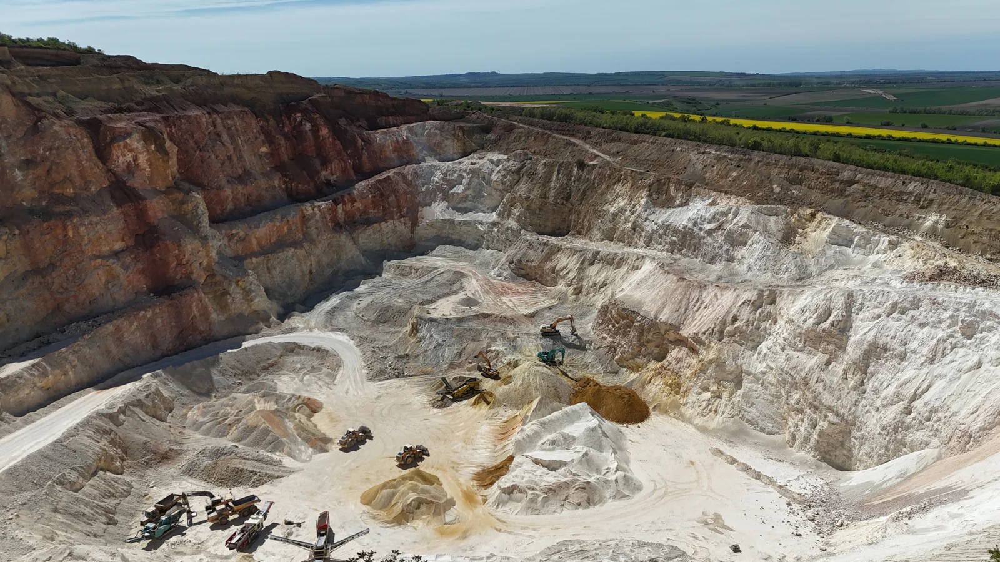
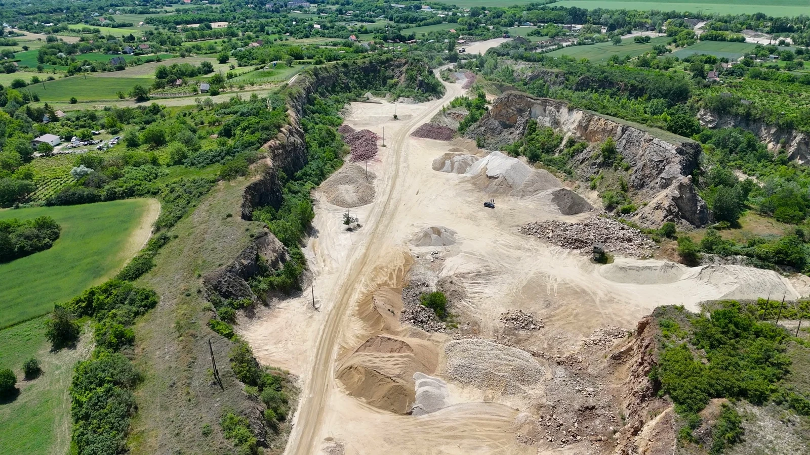
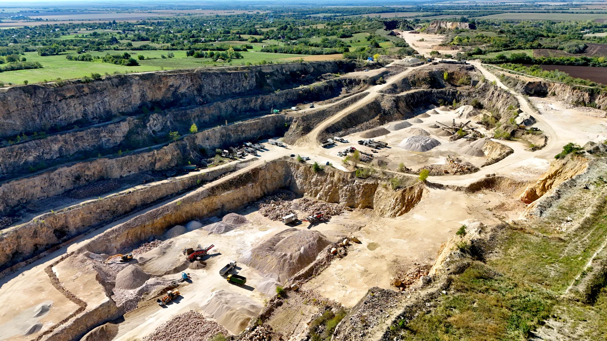

BÁNYATERÜLET
Eplény
Az eplényi helyszín bányaterületét a környező erdők és a feltárt kőzetfelületek látványa jellemzi.

Az utak, az otthonok és az épített környezet mögött természetes alapanyagok állnak. Bányászati tevékenységünk ennek a mindennapi komfortnak a létrehozását támogatja.
Bányáink megismeréseEgy út alapjában, egy családi otthon falában vagy egy kert természetes felületeiben. A kibányászott kőanyagok értékét az is megmutatja, mire használjuk őket: tartós szerkezetek, használható terek és egyedi környezet kialakítására.

A Mészkő és Dolomit Kft. története 1992-ben kezdődött. Családi vállalkozásként, magyar tulajdonosi háttérrel több mint három évtizede vagyunk jelen a kőbányászatban.
Működésünk különböző magyarországi bányaterületekhez és többféle természetes kőanyaghoz kapcsolódik. A mészkő, a dolomit és a gránit mellett díszítő-, tömb-, falazó- és burkolókövek is részét képezik bányászati hátterünknek.
A cégcsoporton belül a Mészkő és Dolomit Kft. a bányákhoz és a bányászati tevékenységhez kapcsolódó szerepet tölti be. Több területen rendelkezünk bányászati joggal; a kitermelési és feldolgozási munkákhoz szakmai partnereink együttműködése kapcsolódik.
A bányászat megváltoztatja az érintett területeket. Az innen származó alapanyagok ugyanakkor fontos szerepet kapnak abban, hogyan építjük és használjuk a környezetünket.
A kő lehet egy út szerkezeti alapja, egy támfal építőanyaga vagy egy kert meghatározó eleme. Ezt az összefüggést is szeretnénk megmutatni: honnan indulnak azok az anyagok, amelyekkel nap mint nap találkozunk.
Cégünk több magyarországi bányában rendelkezik különböző nyersanyagokra fennálló bányászati joggal. Portfóliónk a mészkőtől és dolomittól a grániton át a díszítő- és falazókövekig többféle természetes kőanyagot foglal magában.

Az eplényi helyszín bányaterületét a környező erdők és a feltárt kőzetfelületek látványa jellemzi.

A felsőcsatári bányaterület jellegzetes anyaga a zöldpala. Díszítőkövek, tömbkövek, valamint falazó- és burkolóanyagok kapcsolódnak ehhez a helyszínhez.
A felsőcsatári zöldpala karakteres színével a természetes kőanyagok választékát gazdagítja. A kapcsolódó kőanyagok között kerti sziklák, szabálytalan terméskövek, kerti tipegők és falazókövek is szerepelnek. A konkrét felhasználást az adott anyag tulajdonságai és kialakítása határozzák meg.

A székesfehérvári gránitbányákhoz gránittömbök és gránitmurva kapcsolódnak. Ezek a természetes kőanyagok dekoratív kialakításokban is szerepet kaphatnak.
A Székesfehérvár III–IV. bányák a vállalkozás gránithoz kapcsolódó helyszínei. A tömbök és a murva eltérő megjelenési formát képviselnek, ezért felhasználásuknál a méret, az anyagjellemzők és a tervezett kialakítás egyaránt fontos.

A mányi bányaterület jellemző anyaga a dolomit. Az innen származó alapanyag elsősorban útépítési felhasználáshoz kapcsolódik.
A Mány I. bánya a dolomithoz kapcsolódó bányászati háttér része. Az útépítésben az alapanyag szemcsemérete és műszaki tulajdonságai meghatározók; a megfelelő termék kiválasztása mindig az adott feladat követelményei alapján történik.

A polgárdi bányaterület jellemző anyaga a tömör mészkő. Az innen származó kőanyagok között vízépítési felhasználásra is alkalmas anyag szerepel.
A Polgárdi I. bánya a vállalkozás mészkőhöz kapcsolódó bányászati hátterének része. Az egyes kőanyagok felhasználását a konkrét termék tulajdonságai és a tervezett alkalmazás követelményei határozzák meg.

A kőszárhegyi bányaterület tömör mészkőhöz kapcsolódik. Kőanyagai között vízépítési célokra is alkalmas anyag található.
A Kőszárhegy I. bánya a mészkőbányászati helyszínek egyike. A kőzet építési felhasználása az adott anyag igazolt jellemzőihez és a feladat műszaki követelményeihez igazodik.
Célunk, hogy a természetes kőanyagokhoz kapcsolódó különböző igényekre széles termékkínálattal tudjunk választ adni.
A Polgárdi I., Kőszárhegy I. és Sümeg V. mészkőbányákban tömör mészkő található, amely többek között vízépítési célokra is alkalmas. A kitermelt kőanyag feldolgozva, különböző felhasználási igényekhez igazodva kerül hasznosításra.
A Mány I. és Iszkaszentgyörgy IV. bányák jó minőségű dolomitvagyonnal rendelkeznek. Az innen származó kőanyag elsősorban útépítési alapanyagként használható fel.
A Székesfehérvár III–IV. és Pátka I. gránitbányákból dekoratív megjelenésű gránit származik. A választékban gránittömbök és gránitmurva is megtalálható, így az anyag műszaki és dekorációs felhasználásra egyaránt lehetőséget biztosít.
Lókúti és felsőcsatári bányáink díszítőkövek, tömbkövek, valamint falazó- és burkolóanyagok forrásai. Ezek a természetes kövek tovább feldolgozott – például vágott vagy antikolt – kivitelben is elérhetők.
A kínálat többek között kerti sziklákra, gabion töltőanyagokra, szabálytalan terméskövekre, kerti tipegőkre és falazókövekre is kiterjed.
A nyersanyag kitermelését és feldolgozását stabil, hosszú távú partneri együttműködésekre építve végezzük. A kapcsolódó gépi munkákban a Mészkő Polgár Kft., a Soso Földszer Kft. és a Kő-Ker Csákvár Kft. vesz részt.
Ez az együttműködési rendszer teszi lehetővé, hogy a különböző bányákból származó természetes kőanyagok a felhasználási célhoz igazodó formában és feldolgozottsági szinten álljanak rendelkezésre.
Bányaterületeink film- és televíziós produkciók helyszíneként is szerepet kaptak. A kőzetfelületek és a bányák térformái sajátos vizuális környezetet adnak a forgatásokhoz.
Helyszínnel kapcsolatos érdeklődés esetén keressen bennünket elérhetőségeinken.
Kapcsolatfelvétel ↗Bányaterületeinkkel, bányászati tevékenységünkkel vagy a helyszínek bemutatásával kapcsolatban várjuk megkeresését.
Cégcsoportunk tagja, a Díszkő Trend természetes és díszkövek forgalmazásával foglalkozik. Kínálata azoknak szól, akik épített környezetükben vagy kertjükben szeretnék megmutatni a természetes kő karakterét.